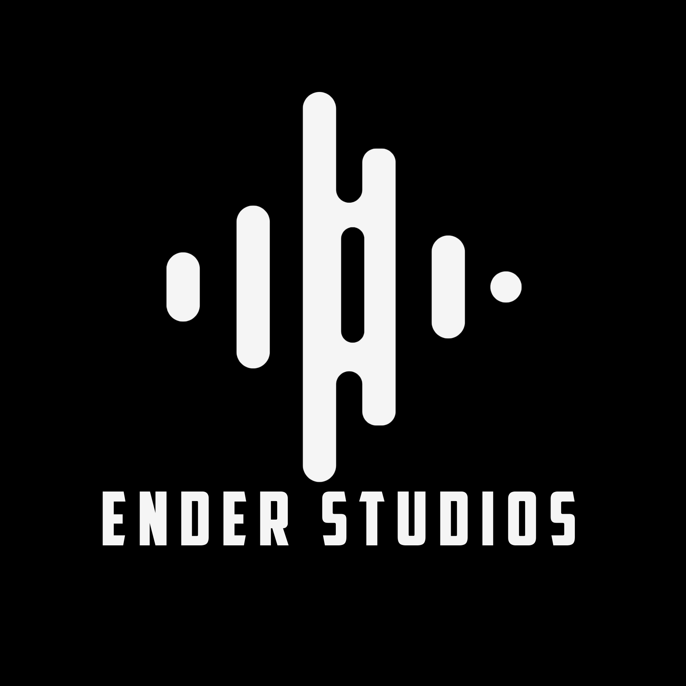
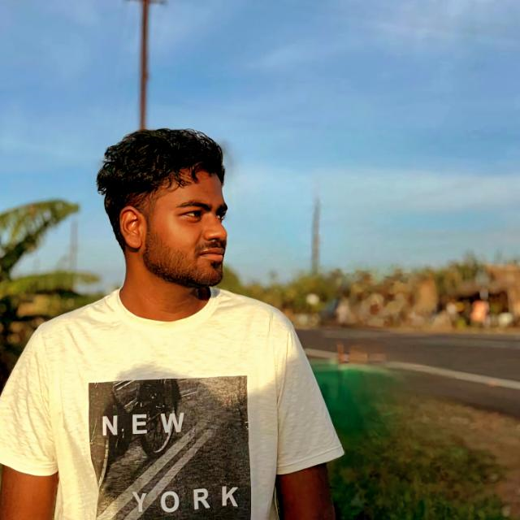

<!DOCTYPE html>
<html lang="en">
<head>
    <meta charset="UTF-8" />
    <meta name="viewport" content="width=device-width, initial-scale=1.0" />
    <title>Ender Studios | Sai Ram Kishan</title>
    <meta name="description" content="Sai Ram Kishan - MBBS student, short film maker, music producer, Unity & MTA:SA scripter. Explore my work and purchase premium MTA:SA scripts." />
    <link rel="stylesheet" href="styles.css" />
    <link rel="icon" type="image/png" href="images/enderstudios.png" />
    <link rel="preconnect" href="https://fonts.googleapis.com">
    <link rel="preconnect" href="https://fonts.gstatic.com" crossorigin>
    <link href="https://fonts.googleapis.com/css2?family=Poppins:wght@300;400;500;600;700&display=swap" rel="stylesheet">
</head>
<body>
    <header class="site-header">
        <div class="container header-inner">
            <div class="brand">
                
                <div class="brand-text">
                    <span class="brand-name">Ender Studios</span>
                    <span class="brand-tagline">Stories, Sound & Scripts</span>
                </div>
            </div>
            <nav class="nav-links">
                <a href="#about">About</a>
                <a href="#films">Films & Music</a>
                <a href="#medical">Medical Journey</a>
                <a href="#skills">Tech & Game Dev</a>
                <a href="#sales" class="nav-sales">Sales</a>
                <a href="#contact">Contact</a>
            </nav>
            <a href="https://www.instagram.com/sairamkishan30" target="_blank" class="btn btn-ig">Follow on Instagram</a>
        </div>
    </header>

    <main>
        <section class="hero" id="top">
            <div class="container hero-inner">
                <div class="hero-text">
                    <p class="hero-kicker">Sai Ram Kishan</p>
                    <h1>Music Producer, Short Film Maker & MBBS Student</h1>
                    <p class="hero-subtitle">
                        I'm an MBBS final year student and the creator behind <strong>Ender Studios</strong> – a
                        <span class="highlight-music">music-first brand</span> where I produce original tracks and
                        scores, make short films, and build premium MTA:SA scripts while pursuing my career as a doctor.
                    </p>
                    <div class="hero-actions">
                        <a href="#sales" class="btn btn-primary">View MTA:SA Script Sales</a>
                        <a href="https://www.instagram.com/sairamkishan30" target="_blank" class="btn btn-ig-outline"><span>DM on Instagram for Music &amp; Scores</span></a>
                    </div>
                    <div class="hero-meta">
                        <span>Final Year MBBS</span>
                        <span>Music Producer</span>
                        <span>Short Film Maker &amp; Developer</span>
                    </div>
                </div>
                <div class="hero-media">
                    <div class="hero-photo-frame">
                        <a href="snakegame.html" class="profile-game-link">
                            
                            <div class="profile-game-overlay">
                                <div class="profile-game-play-icon"></div>
                                <span>Play Game</span>
                            </div>
                        </a>
                        <span class="hero-photo-name">Sai Ram Kishan K J</span>
                    </div>
                </div>
            </div>
        </section>

        <section id="about" class="section">
            <div class="container two-column">
                <div>
                    <h2>About Me</h2>
                    <p>
                        I'm <strong>Sai Ram Kishan</strong>, an <strong>MBBS final year student</strong>, a passionate
                        <strong>music producer</strong>, short film maker, and developer.
                    </p>
                    <p>
                        Under my brand <strong>Ender Studios</strong>, I mainly focus on <strong>music production and
                        scores</strong>, while also bringing together cinema and technology  balancing my clinical
                        journey with creative and technical projects.
                    </p>
                </div>
                <div class="highlight-card">
                    <h3>What I Do</h3>
                    <ul class="dash-list">
                        <li><strong>Music &amp; Scores</strong>: Background scores, songs, sound design.</li>
                        <li><strong>Short Films</strong>: Direction, scripting, editing.</li>
                        <li><strong>Server Scripting</strong>: Premium MTA:SA Lua resources &amp; Minecraft Skript (.sk).</li>
                        <li><strong>Game Dev</strong>: Unity (C#) projects and gameplay systems.</li>
                    </ul>
                </div>
            </div>
        </section>

        <section id="films" class="section section-alt">
            <div class="container">
                <h2>Short Films & Music</h2>
                <div class="grid-2">
                    <div>
                        <h3>Award-Winning Short Films</h3>
                        <ul class="check-list">
                            <li>
                                <strong>2 First Prizes</strong> at intercollege culturals:
                                <br />
                                Indira Gandhi Medical College & Research Institute (Event: <strong>Adwaita</strong>)
                                <br />
                                Karpaga Vinayaga Institute of Medical Sciences (Event: <strong>Affinity</strong>)
                            </li>
                            <li>
                                <strong>Top 5 (5th Place)</strong> at Madras Medical College intercollege event
                                <strong>Revivals</strong> for my short film.
                            </li>
                        </ul>
                        <p class="small-muted">
                            Skills used: <strong>Video editing</strong>, <strong>script writing</strong>,
                            <strong>music production</strong>, and <strong>storytelling</strong>.
                        </p>
                    </div>
                    <div class="films-right">
                        <h3>Featured Short Film</h3>
                        <div class="video-card">
                            <a href="https://www.youtube.com/watch?v=tPtee_KbDRo" target="_blank" class="video-preview">
                                <div class="video-preview-play"><span></span></div>
                            </a>
                            <a href="https://www.youtube.com/watch?v=tPtee_KbDRo" target="_blank" class="video-link">Open short film on YouTube</a>
                        </div>
                        <div class="music-note">
                            <p>
                                I also composed a song for the short film <strong>&quot;Kathalai Thedi&quot;</strong> for
                                <strong>Brokens Production</strong>, releasing soon.
                            </p>
                            <p>
                                For <strong>music production, background scores, or soundtracks</strong>,
                                <a href="https://www.instagram.com/sairamkishan30" target="_blank" class="link-ig">DM me on Instagram</a>.
                            </p>
                        </div>
                    </div>
                </div>
            </div>
        </section>

        <section id="medical" class="section">
            <div class="container two-column">
                <div>
                    <h2>My Medical Journey</h2>
                    <p>
                        I'm currently in my <strong>final year of MBBS</strong>, training to become a doctor while
                        actively building skills in film, music, and development.
                    </p>
                        This unique combination helps me understand people better, tell deeper stories, and work in a
                        disciplined, structured way on every creative and technical project.
                    </p>
                </div>
                <div class="pill-card">
                    <h3>Balance of Medicine & Media</h3>
                    <p>
                        Clinical exposure sharpens my empathy and decision-making.
                        Filmmaking and music sharpen my creativity and collaboration.
                    </p>
                </div>
            </div>
        </section>

        <section id="skills" class="section section-alt">
            <div class="container">
                <h2>Tech, Game Dev & Scripting Skills</h2>
                <div class="grid-3">
                    <div class="skill-card">
                        <h3>MTA:SA (Lua)</h3>
                        <p>
                            Created and contributed <strong>premium scripts</strong> and resources for
                            <strong>Multi Theft Auto: San Andreas</strong> servers using <strong>Lua</strong>.
                        </p>
                    </div>
                    <div class="skill-card">
                        <h3>Unity Game Development</h3>
                        <p>
                            Beginner-level experience learning <strong>C# in Unity</strong>, exploring gameplay mechanics
                            and building small prototypes.
                        </p>
                    </div>
                    <div class="skill-card">
                        <h3>Minecraft Skript (.sk)</h3>
                        <p>
                            Developed custom mechanics and server features using <strong>Minecraft Skript</strong>,
                            extending gameplay without heavy plugins.
                        </p>
                    </div>
                </div>
            </div>
        </section>

        <section id="sales" class="section section-sales">
            <div class="container">
                <div class="sales-header">
                    <h2>🚀 MTA:SA Script Sales</h2>
                    <p>Premium, production-ready scripts and resources for your Multi Theft Auto: San Andreas server.</p>
                </div>
                <div class="sales-content">
                    <div class="sales-card">
                        <h3>Premium MTA:SA Resources Repository</h3>
                        <p>
                            Browse my <strong>premium MTA:SA scripts</strong>, built from real server experience and
                            focused on performance, stability, and player experience.
                        </p>
                        <a href="https://github.com/sairamkishan300/-SaiRam-s-Premium-MTA-SA-Resources-Repository" target="_blank" class="btn btn-sales">View Scripts on GitHub</a>
                        <p class="small-muted">
                            For purchase details, custom scripts, or support, please contact me on
                            <a href="https://discord.gg/C6yGdAEWEa" target="_blank">Discord</a>.
                        </p>
                    </div>
                    <div class="sales-highlight">
                        <h4>Why My Scripts?</h4>
                        <ul class="dash-list">
                            <li>Optimized for real-world MTA:SA servers.</li>
                            <li>Clean, maintainable Lua code.</li>
                            <li>Gameplay-focused features that players actually use.</li>
                            <li>Ongoing improvements and support (subject to availability).</li>
                        </ul>
                        <a href="https://discord.gg/C6yGdAEWEa" target="_blank" class="btn btn-ghost">Join Discord for Pricing</a>
                    </div>
                </div>
            </div>
        </section>

        <section id="contact" class="section section-contact">
            <div class="container contact-inner">
                <div>
                    <h2>Let's Work Together</h2>
                    <p>
                        Open to collaborations and commissions in <strong>music production</strong>,
                        <strong>background scores</strong>, <strong>short films</strong>, and
                        <strong>MTA:SA/Minecraft scripting</strong>.
                    </p>
                    <p class="contact-note">
                        For <strong>music production</strong> and <strong>video editing</strong>, the best way to reach
                        me is via <strong>Instagram DM</strong>.
                    </p>
                    <div class="contact-actions">
                        <a href="https://www.instagram.com/sairamkishan30" target="_blank" class="btn btn-ig-large">Follow & DM on Instagram</a>
                        <a href="https://discord.gg/C6yGdAEWEa" target="_blank" class="btn btn-ghost">Join us on Discord</a>
                        <a href="https://github.com/sairamkishan300" target="_blank" class="btn btn-ghost">View My GitHub Profile</a>
                        <a href="https://www.linkedin.com/in/sai-ram-kishan-7693252a5/" target="_blank" class="btn btn-ghost">Connect on LinkedIn</a>
                    </div>
                </div>
                <div class="contact-side">
                    <h3>Quick Links</h3>
                    <ul class="link-list">
                        <li><a href="#top">Back to Top</a></li>
                        <li><a href="#films">Short Films & Music</a></li>
                        <li><a href="#skills">Tech & Game Dev</a></li>
                        <li><a href="#sales">MTA:SA Script Sales</a></li>
                    </ul>
                </div>
            </div>
        </section>
    </main>

    <footer class="site-footer">
        <div class="container footer-inner">
            <span>&copy; <span id="year"></span> Ender Studios  Sai Ram Kishan</span>
            <span>Medicine  Music  Game Dev</span>
        </div>
    </footer>

    <script>
        const yearSpan = document.getElementById('year');
        if (yearSpan) {
            yearSpan.textContent = new Date().getFullYear();
        }
    </script>
</body>
</html>
